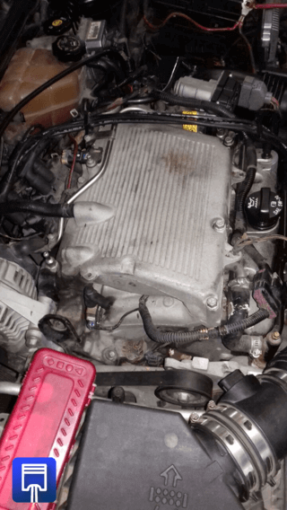
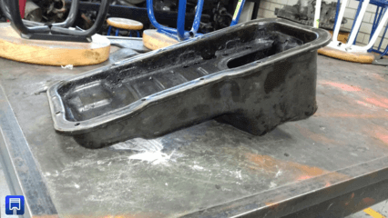
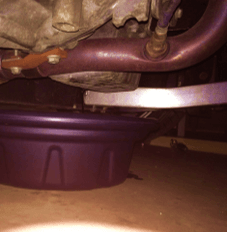
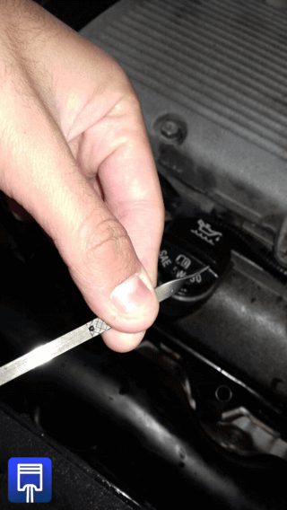

-
Arrancar el motor del coche.
Aproximadamente 5 y 10 minutos. De esta manera conseguirás que el aceite se caliente un poco y se pueda extraer de manera más fácil.
 -
Localiza el tapón de vaciado.
El tapón está situado en los bajos, debajo del motor, algunas veces tiene un protector que se tiene que retirar, (se encuentra en el carter).

-
Praparación del proceso.Pon un recipiente bajo el tapón de vaciado o en el caso que estés con un elevador coloca un extractor de aceite.
-
Busca y quita el tapon del aceite.
Debes quitar el tapón con la mano. Pero cuando empiece a caer el aceite retírala rápidamente. Deja que salga todo el aceite, se tiene que sacar hasta la última gota.
-
Quita el viejo y coloca el nuevo filtro
Mientras el aceite va cayendo, puedes quitar el filtro. Tienes que buscar un recipiente cilíndrico, cerca del motor. Para retirarlo coge una llave para filtros desenróscalo y retíralo.
Antes de colocarlo tienes que lubrícalo con aceite en la junta, una vez hecho este paso colócalo con la mano.
-
Coloca el tapón otra vez.
Cuando todo el aceite haya salido, coloca el tapón de nuevo sin ejercer mucha fuerza debido a que este se puede romper o deformar.
-
Coloca el nuevo aceite.
Localiza en el capo del coche la entrada o espacio por donde introducirlo. Regularmente este espacio es fácil de identificar y se puede observar una balloneta con la que se puede medir el aceite.
